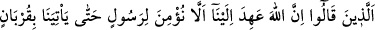
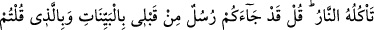
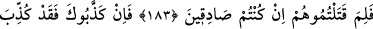
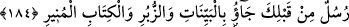
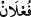

PEYGAMBERLERİ YALANLAMAK
183. “Doğrusu Allah bize, (gökten inen) ateşin yiyeceği (yakıp kor edeceği) bir
kurban getirmedikçe hiçbir peygambere inanmamamızı emretti” diyenlere şöyle
de: Size, benden önce mûcizelerle, (özellikle) dediğiniz (mûcize) ile nice
peygamberler geldi. Eğer doğru insanlar iseniz, ya onları niçin öldürdünüz?
184. (Rasûlüm!) Eğer seni yalancılıkla itham ettilerse (yadırgama); gerçekten,
senden önce apaçık mûcizeler, sahifeler ve aydınlatıcı kitap getiren nice
peygamberler de yalancılıkla itham edildi.
“Muhakkak ki Allah bize Tevrat’ta gökten inen ateşin yiyeceği bir kurban
getirmedikçe” ve bu kurban, onun doğruluğuna delâlet etmedikçe, hiçbir peygambere
inanmamamızı emir ve tavsiye etti.” dediler.” Bunu diyenler, Ka’b b. Eşref, Mâlik b.
Sayf, Huyey b. Ahtab, Finhâs b. Âzûra ve Vehb b. Yehûdâ’dır.
Kurban, amel-i sâlih, zâhidâne hayat ve sadaka gibi, kulun Allah’a ulaştığı her şeyin
adı olup kurbet (yakınlık) kelimesinin “__WORD__” kalıbıdır.
Atâ b. Ebî Rabâh der ki: İsrâiloğulları, Allah Teâlâ için kurban keserler, kurbanların
içyağlarını ve etlerin en lezîz kısımlarını alırlar, tavanı açık bir evin ortasına koyarlar;
kendileri evin etrafında dışarıda bekledikleri halde, peygamberleri evin içinde ayakta
Rabbı’na yakarırdı. Ve, gökten; parlayan, gürültülü, dumansız, bembeyaz bir ateş inip
bu kurbanı yerdi, yani onu yakarak kendi sûretine çevirirdi. Bu da o kurbanın kabul
edildiğine alâmet olurdu. Kurban kabul edilmedi ise olduğu gibi dururdu. Bu hikâye
yahûdî palavralarındandır. Çünkü ateşin kurbanı yemesi, îmanı gerektiriyorsa, sırf
mûcize olduğu için gerektirir. Öyle ise, bu mûcizenin diğer mûcizelerden bir farkı
yoktur.
Yahûdîlerin bu boş sözleri esas itibariyle Peygamber’e inanmamalarının, dedikleri
ateşi getirememesinden kaynaklandığını, eğer bu ateşi getirseydi îman edecekleri”
şeklinde olduğu için, bunlara reddiye olarak Allah Teâlâ, Peygamber Efendimiz’e
bunları azarlayıp yalanlarını yüzlerine vurarak şöyle demesini emrediyor: De ki: “Size;
atalarınıza ve selefinize benden önce apaçık mûcizeler ve de bizzat dediğinizi yani
ateşin yediği kurban mûcizesini getiren çok sayıda, peygamber geldi. Fakat onları